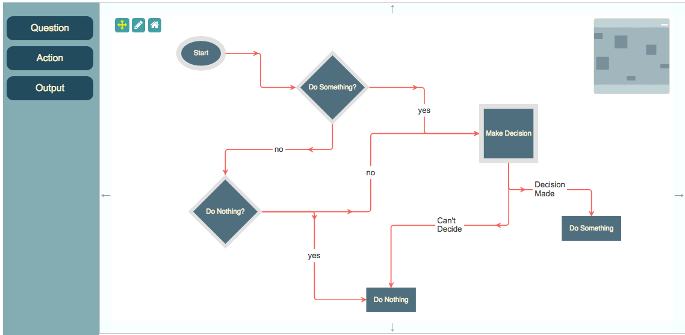
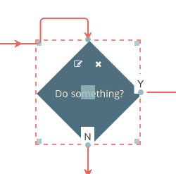
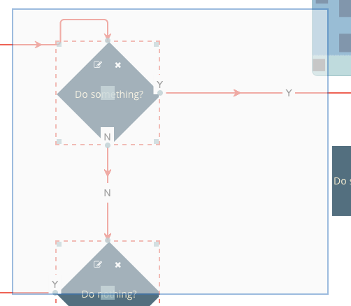
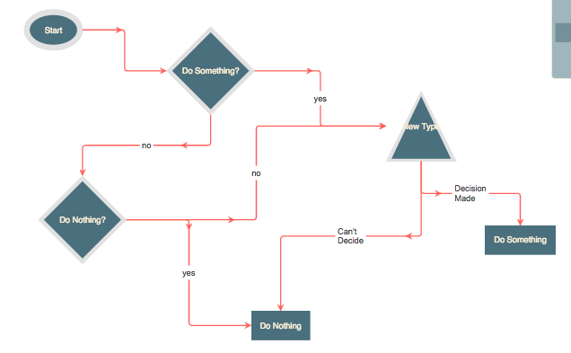

This is a simple flowchart builder application, with support for questions, actions and outputs.

This page gives you an in-depth look at how the application is put together.
<link href="//maxcdn.bootstrapcdn.com/bootstrap/3.2.0/css/bootstrap.min.css" rel="stylesheet">
<link href="node_modules/font-awesome/css/font-awesome.min.css" rel="stylesheet">
<link rel="stylesheet" href="node_modules/jsplumbtoolkit/dist/css/jsplumbtoolkit-defaults.css">
<link rel="stylesheet" href="node_modules/jsplumbtoolkit/dist/css/jsplumbtoolkit-demo.css">
<link rel="stylesheet" href="app.css">
Font Awesome, Bootstrap, jsplumbtoolkit-demo.css, and app.css are used for this demo and are not jsPlumb Toolkit requirements. jsplumbtoolkit-defaults.css is recommended for
all apps using the Toolkit, at least when you first start to build your app. This stylesheet contains sane defaults for the various widgets in the Toolkit.
There are four templates used by the app - one each for the node types of Question, Action and Output, and one
for the Start node. These are contained in the templates.html file, which is imported into the page via this
script tag:
<script type="text/x-jtk-templates" src="templates.html"></script>
The templates look like this:
Start
<script type="jtk" id="tmplStart">
<div style="left:${left}px;top:${top}px;width:${w}px;height:${h}px;" class="flowchart-object flowchart-start">
<div style="position:relative">
<svg:svg width="${w}" height="${h}">
<svg:ellipse cx="${w/2}" cy="${h/2}" rx="${w/2}" ry="${h/2}"></svg:ellipse>
<svg:text text-anchor="middle" x="${ w / 2 }" y="${ h / 2 }" dominant-baseline="central">${text}</svg:text>
</svg:svg>
</div>
<jtk-source port-type="start" filter="svg *" filter-negate="true"></jtk-source>
</div>
</script>
The Start node consists of an ellipse with a text label centered inside of it. Note here how all SVG elements are required to be declared in the svg: namespace. This is a requirement of Rotors and would not necessarily apply if you were using some other template engine.
In this template we can see the w, h, left and top values from the node's data being used not just to position the element but also to provide appropriate values for the ellipse and text label.
The jtk-source element declares that this node is an edge source, of type start (the port-type attribute specifies this). The filter attribute instructs the Toolkit to enable drag only from some element that is not a child of an svg element, but then filter-negate is true: the result is that dragging will begin only from a descendant of the svg element. What this means visually is that the user will not be able to start a drag from the whitespace surrounding the ellipse.
Action
<script type="jtk" id="tmplAction">
<div style="left:${left}px;top:${top}px;width:${w}px;height:${h}px;" class="flowchart-object flowchart-action">
<div style="position:relative">
<div class="node-edit node-action">
<i class="fa fa-pencil-square-o"></i>
</div>
<div class="node-delete node-action">
<i class="fa fa-times"></i>
</div>
<svg:svg width="${w}" height="${h}">
<svg:rect x="0" y="0" width="${w}" height="${h}"></svg:rect>
<svg:text text-anchor="middle" x="${w/2}" y="${h/2}" dominant-baseline="central">${text}</svg:text>
</svg:svg>
</div>
<jtk-target port-type="target"></jtk-target>
<jtk-port port-type="source"></jtk-port>
</div>
</script>
Once again we use the position and dimensions for the node's main container as well as its SVG elements. Action nodes are configured as both edge sources and targets.
Question
<script type="jtk" id="tmplQuestion">
<div style="left:${left}px;top:${top}px;width:${w}px;height:${h}px;" class="flowchart-object flowchart-question">
<div style="position:relative">
<div class="node-edit node-action">
<i class="fa fa-pencil-square-o"></i>
</div>
<div class="node-delete node-action">
<i class="fa fa-times"></i>
</div>
<svg:svg width="${w}" height="${h}">
<svg:path d="M ${w/2} 0 L ${w} ${h/2} L ${w/2} ${h} L 0 ${h/2} Z"></svg:path>
<svg:text text-anchor="middle" x="${w/2}" y="${h/2}" dominant-baseline="central">${text}</svg:text>
</svg:svg>
</div>
<jtk-port port-id="no" port-type="noSource"></jtk-port>
<jtk-port port-id="yes" port-type="yesSource"></jtk-port>
<jtk-target port-type="target"></jtk-target>
</div>
</script>
The Question node draws a diamond, and declares itself to be an edge target. Unlike the Action node, though, this node adds two Endpoints, via jtk-port elements, instead of declaring that the entire element is an edge source.
Output
<script type="jtk" id="tmplOutput">
<div style="left:${left}px;top:${top}px;width:${w}px;height:${h}px;" class="flowchart-object flowchart-output">
<div style="position:relative">
<div class="node-edit node-action">
<i class="fa fa-pencil-square-o"></i>
</div>
<div class="node-delete node-action">
<i class="fa fa-times"></i>
</div>
<svg:svg width="${w}" height="${h}">
<svg:rect x="0" y="0" width="${w}" height="${h}"></svg:rect>
<svg:text text-anchor="middle" x="${w/2}" y="${h/2}" dominant-baseline="central">${text}</svg:text>
</svg:svg>
</div>
<jtk-target port-type="target"></jtk-target>
</div>
</script>
The Output node is configured to be a connection target only.
Data for this application is stored in data/flowchart-1.json inside the application folder. It is loaded by this code:
toolkit.load({
url: "data/flowchart-1.json"
});
The Surface widget provides a means for you to configure a set of nodes that you wish to be able to drag and drop into the work area. This is the code in the Flowchart Builder that does this:
renderer.registerDroppableNodes({
droppables:$("#nodePalette li"),
dragOptions:{
zIndex:50000,
cursor:"move",
clone : true
},
typeExtractor:function(el) {
return $(el).attr("jtk-node-type");
},
dataGenerator:function(type) { return { name:type }; }
});
So, the method is registerDroppableNodes. It takes four arguments:
clone:true. If you were using jQuery as the underlying library, you would set helper:"clone" here instead.type of a Node you have just dropped. In this case we have written the Node type into the jtk-node-type attribute, so we just extract it from there.typeGenerator function.The Toolkit publishes a long list of events during the rendering lifecycle - nodeAdded, edgeAdded, etc - all of which can be subscribed to from within a palette definition. But for your app's behaviour, it is better to use event delegation and configure all of your event listeners in one place. In the Flowchart Builder there are three pieces of behaviour that we need to code that are not completely handled for us by the Toolkit:
We'll go through each of these and provide a brief code snippet highlighting the main points.
jsPlumb.on(document, "tap", ".node-edit", function () {
var info = renderer.getObjectInfo(this);
jsPlumbToolkit.Dialogs.show({
id: "dlgText",
data: info.obj.data,
title: "Edit " + info.obj.data.type + " name",
onOK: function (data) {
if (data.text && data.text.length > 2) {
// if name is at least 2 chars long, update the underlying data and update the UI.
toolkit.updateNode(info.obj, data);
}
}
});
});
Note here the getObjectInfo method: this is method with which you will want to acquaint yourself. It is defined on a
Surface, not on a Toolkit instance, and takes a DOM element as argument and places it within the context of some object
managed by the Toolkit instance that the Surface is associated with. In this case, the click event occurs on an icon.
getObjectInfo traverses up the icon's ancestors until it finds an element that is associated with a Toolkit object -
in our app, either a Table or View. When a Toolkit object is found, getObjectInfo returns an object with these values:
In this event handler, we show the user a dialog that will allow them to edit the Node's text. If the edited text is at least two character long we update the model.
This application uses the Toolkit's dialogs import to manage simple interactions with data members such as this. Your application may choose to use a different mechanism.
jsPlumb.on(document, "tap", ".node-delete", function () {
var info = renderer.getObjectInfo(this);
jsPlumbToolkit.Dialogs.show({
id: "dlgConfirm",
data: {
msg: "Delete '" + info.obj.data.text + "'"
},
onOK: function () {
toolkit.removeNode(info.obj);
}
});
});
We use getObjectInfo again to find the related Toolkit Node, and then we prompt the user to see if they wish to delete
it. If the users answers yes, then we call removeNode on the Toolkit, passing in the ID of the object to delete. This
will cause all Edges associated with the Node to be deleted, and for the UI to be updated accordingly.
We register a dblclick listener on edges by providing it as an event handler to the View, on the edge type that acts
as the parent type for all others:
...
edges: {
"default": {
connector: ["Flowchart", { cornerRadius: 5 } ],
paintStyle: { lineWidth: 2, strokeStyle: "#f76258", outlineWidth: 3, outlineColor: "transparent" },
hoverPaintStyle: { lineWidth: 2, strokeStyle: "rgb(67,67,67)" },
events: {
"dblclick": function (params) {
jsPlumbToolkit.Dialogs.show({
id: "dlgConfirm",
data: {
msg: "Delete Edge"
},
onOK: function () {
toolkit.removeEdge(params.edge);
}
});
}
},
...
All Edges except those from a Start node are set to be of type connection, which is defined in the view as follows:
"connection":{
parent:"default",
overlays:[
[ "Label", {
label: "${label}",
events:{
click:function(params) {
_editLabel(params.edge);
}
}
}]
]
}
We define a click event handler on the Label overlay which edits the label for the Edge.
To resize or drag a node first you must either click on it, or use the lasso (described below) to select it. A selected node looks like this:

The dotted line and drag handles that are added to a selected Node are put there by the Tookit's drawing tools. It listens to the Toolkit's select/deselect events and decorates UI elements accordingly. These tools are discussed in detail on this page.
The drawing tools are initialized with this line of code:
// configure Drawing tools.
new jsPlumbToolkit.DrawingTools({renderer: renderer});
You pass them the instance of the Surface widget you're working with.
Nodes can be dragged only by the square in the center of the node. This is achieved by setting a filter on the dragOptions parameter on the render call:
dragOptions: {
handle: ".jtk-draw-drag"
}
jtk-draw-drag is the classname of the square that the drawing tools place in the center of a selected node.
Resizing is handled automatically by the drawing tools. By default, these tools will change the w, h, left and top values in a node's data, but this can be changed.
When a node's data is updated the drawing tools call the appropriate update method on the underlying Toolkit. Note that to see the changes reflected immediately in the DOM you need to be using the Toolkit's default template mechanism, Rotors. If you're using your own template mechanism you will need to listen for events from the drawing tools and update the DOM yourself.
Nodes can be selected with a left-click (or tap on a touch device; tap is a better event to choose in general because the
Toolkit abstracts out the difference between mouse devices and touch devices and presents click events as tap events
on non touch devices). This is configured in the view parameter to the render call. In this application,
Nodes of type selectable have the capability enabled with this code:
"selectable": {
events: {
tap: function (params) {
toolkit.toggleSelection(params.node);
}
}
}
The tap event (discussed here) is preferable to click, as it ensures the application responds only to true clicks on devices with a mouse, and also avoids the delay that some vendors introduce to a click event on touch devices.
Lasso selection is enabled by default on the Surface widget.
To activate the lasso, click the pencil icon in the toolbar:

The code that listens to clicks on this icon is as follows:
// listener for mode change on renderer.
renderer.bind("modeChanged", function (mode) {
jsPlumb.removeClass(jsPlumb.getSelector("[mode]"), "selected-mode");
jsPlumb.addClass(jsPlumb.getSelector("[mode='" + mode + "']"), "selected-mode");
});
// pan mode/select mode
jsPlumb.on(".controls", "click", "[mode]", function () {
renderer.setMode(this.getAttribute("mode"));
});
Here we've registered an event listener to be informed when the Surface's mode has changed; it is responsible for setting the appropriate classes on the toolbar items. The click listener extracts the desired mode from the button that was clicked and sets it on the renderer.
The lasso works in two ways: when you drag from left to right, any node that intersects your lasso will be selected. When you drag from right to left, only nodes that are enclosed by your lasso will be selected.

Note that in this demo we also set lassoInvert:true on our render call, which results in a lasso that masks unselected
parts of the UI (which is in contrast to the default mode of operation, in which the lasso draws an element corresponding
to selected parts of the UI).
The Surface widget automatically exits select mode once the user has selected something. In this application we also listen to clicks on the whitespace in the widget and switch back to pan mode when we detect one. This is the events argument to the render call:
events: {
canvasClick: function (e) {
toolkit.clearSelection();
}
}
clearSelection clears the current selection and switches back to Pan mode.
The dialogs used in this app are part of the jsPlumb Toolkit core. They provide a simple abstraction around the business of getting input from the user and dealing with it; they're not necessarily fully-featured enough for all applications.
To initialize the dialogs, first call jsPlumbToolkit.Dialogs.initialize, with an appropriate selector for the templates for your dialogs (see below for an explanation of this):
jsPlumbToolkit.Dialogs.initialize({
selector:".dlg"
});
var showDialog = jsPlumbToolkit.Dialogs.show;
Note here we've also aliased jsPlumbToolkit.Dialogs.show, to save some typing.
Each dialog has a template in the HTML, with some class name that you matched in the selector argument to the initialize call above:
<script type="jtk" class="dlg" id="dlgViewQuery" title="Edit Query">
<textarea class="txtViewQuery" jtk-focus jtk-att="query">${query}</textarea>
</script>
These templates use the same template engine as the Surface renderer, so in this example you can see we've extracted query from the View node's data, and injected it into the textarea. But what might not be immediately obvious is the purpose of the jtk-att attribute: it tells the dialog handler that the value of this textarea should be passed to the OK handler, using the key query.
Note also in the above example, the jtk-focus attribute: this tells the dialog handler that the textarea should be given the focus when the dialog first opens.
This example is the dialog that is shown when you edit a View query. We provide the id of the template to use for the dialog, and we provide the View node's data as the backing data for the dialog. Then we provide an onOK callback:
jsPlumbToolkit.Dialogs.show({
id:"dlgViewQuery",
data:info.obj.data,
onOK:function(data) {
// update data
toolkit.updateNode(info.obj, data);
// update UI
info.el.querySelectorAll(".view-details")[0].innerHTML = data.query;
}
});
The data argument to the onOK callback consists of an object whose key value pairs are determined by the jtk-att attributes found in the template. Recall that above we had a textarea with jtk-att:"query". This means that the data argument to onOK looks like this:
{
query:"the contents of the text area"
}
The list of supported input types is:
If you set a title attribute on a dialog's template, that value will be used for the title of the dialog. Alternatively, you can provide a title parameter to the show call.
There are three lifecycle callbacks supported:
If you're using this demo as a starting point for your own app, perhaps you are wondering how you'd go about adding a new
type of Node. The process is straightforward. Let's add support for Nodes with type uncertainty.
Our new Node type will be rendered as a triangle. In this demo the general form of each template is of a container
div that contains an SVG element, with the node's shape being drawn via SVG. So our uncertainty Node is almost
identical to a question node, with the only differences being the SVG path elements (and a CSS class):
<script type="jtk" id="tmplUncertainty">
<div style="left:${left}px;top:${top}px;width:${w}px;height:${h}px;" class="flowchart-object flowchart-uncertainty">
<div style="position:relative">
<div class="node-edit node-action">
<i class="fa fa-pencil-square-o"/>
</div>
<div class="node-delete node-action">
<i class="fa fa-times"/>
</div>
<svg:svg width="${w}" height="${h}">
<svg:path d="M ${w/2} 0 L ${w} ${h} L 0 ${h} L ${w/2} 0 Z" class="outer"/>
<svg:path d="M ${w/2} 10 L ${w-10} ${h-5} L ${10} ${h-5} L ${w/2} 10 Z" class="inner"/>
<svg:text text-anchor="middle" x="${w/2}" y="${h/2}" dominant-baseline="central">${text}</svg:text>
</svg:svg>
</div>
<jtk-source port-type="source" filter=".outer"/>
<jtk-target port-type="target"/>
</div>
</script>
nodes: {
"start": {
template: "tmplStart"
},
"selectable": {
events: {
tap: function (params) {
toolkit.toggleSelection(params.node);
}
}
},
"question": {
parent: "selectable",
template: "tmplQuestion"
},
"action": {
parent: "selectable",
template: "tmplAction"
},
"output":{
parent:"selectable",
template:"tmplOutput"
},
"uncertainty":{
parent:"selectable",
template:"tmplUncertainty"
}
}
Note here we said that this new node type's template should extend selectable, which action and question
and output all do, but start does not. We didn't have to extend selectable if we didn't want to, but it gives
us the tap to select functionality for this new type.
For reference, here's how you'd represent a Node of this new type in your data (we've changed the existing Make
Decision Node here to be of our new type):
{
"id": "decide",
"type": "uncertainty",
"text": "New Type",
"left": 660,
"top": 187,
"w": 120,
"h": 120
}
With these few changes you get this output:
